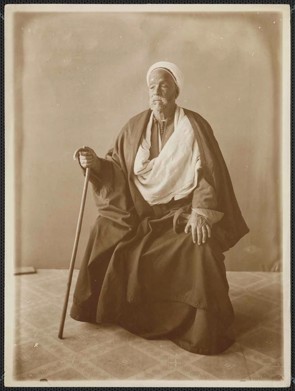
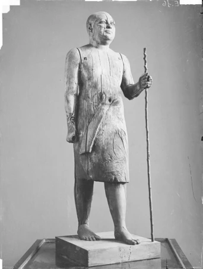
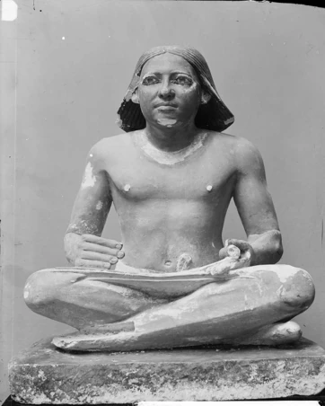
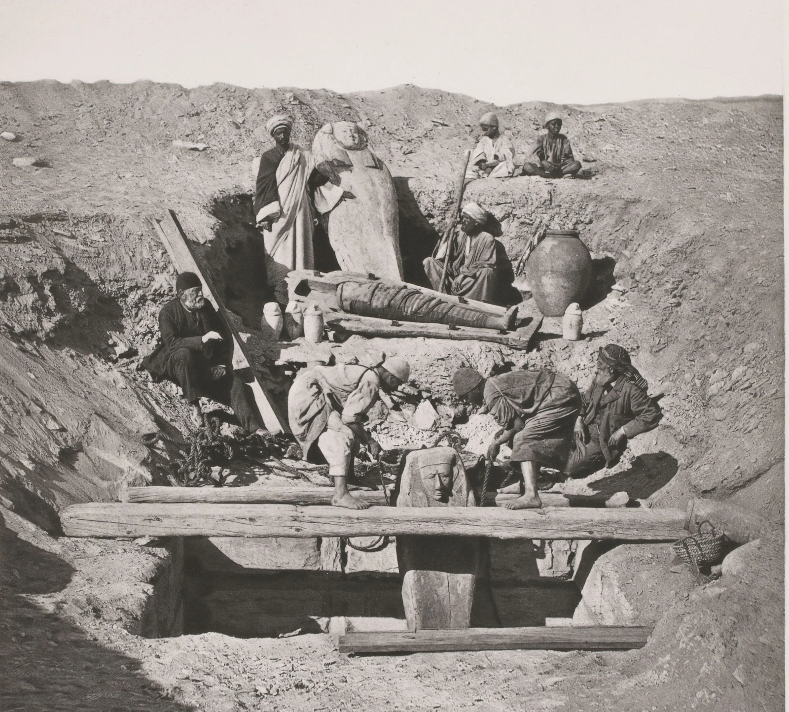

Résumé
Brève note sur Roubi Hamzaoui, reïs égyptien (contremaître des ouvriers de fouilles) qui, recruté dès son plus jeune âge, travailla pour le Service des antiquités de l’Égypte pendant plus de cinquante ans. Avec Mariette, il fut sans doute l’un des plus grands fouilleurs de Saqqara.
Un homme injustement méconnu de l’égyptologie : Roubi Hamzaoui, reïs (contremaître des ouvriers de fouilles) à Saqqara qui fouilla pendant plus de 50 ans sous l’autorité des directeurs successifs du Service des antiquités de l’Égypte (Auguste Mariette, Gaston Maspero, Eugène Grébaut, Jacques de Morgan et Victor Loret).
Le reïs Roubi eut sous sa direction des milliers d’ouvriers, hommes et enfants, il découvrit des centaines de tombeaux, ouvrit plusieurs pyramides et mit au jour des milliers d’objets, principalement à Saqqara mais aussi à Abousir, Giza, Dahchour, Meydoum et Licht. On lui doit notamment plusieurs chefs-d’œuvre du musée du Caire dont la découverte est, comme il est généralement d’usage en archéologie, attribuée au directeur de la fouille (en l’occurrence Mariette et de Morgan) : le cheikh el-beled et le scribe dit « de Morgan » (Caire CG 34 et 36).
C’est aussi lui qui constata le premier l’existence des fameux « textes des pyramides » en entrant, au printemps 1879, dans la pyramide de Pepi I, puis fin 1880-début 1881 dans la pyramide de Merenrê1.

Portrait en pied du Reïs Roubi âgé
(photographie d’Émile Brugsch)
© Ministère de la Culture (France),
Médiathèque du patrimoine et
de la photographie
https://pop.culture.gouv.fr/notice/memoire/AP1315T0620
C’est encore à lui, par exemple, que l’on doit le déblaiement du superbe mastaba d’Akhethetep aujourd’hui exposé au musée du Louvre (E 10958 A)2.


Le cheikh el-beled et le scribe « de Morgan » du musée du Caire (photographies d’Émile Brugsch)
© Ministère de la Culture (France), Médiathèque du patrimoine
et de la photographie
https://pop.culture.gouv.fr/notice/memoire/APBAE000016B
https://pop.culture.gouv.fr/notice/memoire/APBAE000191B
Hormis quelques rapports d’opérations archéologiques mentionnant son nom, les informations dont on dispose au sujet du reïs Roubi sont rares. Toute sa vie, il demeura à Saqqara, d’où il était originaire3, et jusqu’à sa mort en juin 1904, il fut la mémoire vivante des fouilles de la nécropole de l’ancienne Memphis.
Une anecdote pittoresque se trouve toutefois dans une lettre écrite par l’égyptologue américain Charles Edwin Wilbour datée du 22 janvier 1883 :
(…) Rooby yesterday in the Elder Pepi’s pyramid (= Pepi I [N.D.A.]) asked me if among the hieroglyphs there was Allah. I showed him the sign for God. Then he asked if the Prophet was there. I explained that this was only the year 1300 of the Hegira while these hieroglyphs were five thousand years old. He seemed satisfied especially when I showed him how plural the Gods were, the sign being often eighteen times repeated and how Mohammed had changed it so that since his time Egypt believed in but one God. Then he learned half a dozen letters; we will see if he remembers them two months hence.4
Témoignage exceptionnel d’une autre anthropologie de l’Égypte ancienne, celle d’un reïs ayant travaillé plusieurs décennies durant au contact des pionniers de l’égyptologie française…
Je connais une unique photographie sur laquelle figurent ensemble les deux plus grands fouilleurs de Saqqara : à gauche, assis, l’air pensif, Auguste Mariette ; tout juste à droite, débout, face à l’objectif, le reïs Roubi.

D’après Auguste Mariette, Voyage dans la Haute-Égypte, Le Caire, Paris, 1878, pl. 14
Le premier est une figure majeure de l’égyptologie, l’autre n’a pas même une notice dans l’édition la plus récente du Who Was Who in Egyptology (Morris L. Bierbrier [éd.], 5e éd., 2019), ouvrage de référence censé répertorier tous ceux et toutes celles qui contribuèrent à cette science.
Avec Roubi, bien d’autres reïs de fouilles mériteraient de figurer dans une prochaine édition de ce dictionnaire biographique. Fort heureusement, depuis une quinzaine d’années, la documentation disponible et les recherches relatives aux travailleurs égyptiens au service de l’archéologie se sont très largement enrichies et développées, rendant l’entreprise tout à fait réalisable5. Cet intérêt nouveau est à l’honneur d’une égyptologie inclusive enfin dignement reconnaissante envers ses valeureux oubliés, et capable de remettre en question et de penser/panser ses vieux fondements orientalistes.
Des vies de quelques lignes ou de quelques pages, des malheurs et des aventures sans nombre, ramassés en une poignée de mots. Mais des exempla portant des leçons à méditer…
Annexe 1
Ce qu’ont dit du reïs Roubi…
… Auguste Mariette (1878)
Comme reïs, Roubi a des qualités qui nous le rendent très précieux. Depuis seize ans qu’il est l’employé du Musée, ce fellah illettré a vu tant d’antiquités qu’il les connaît, et que, tant bien que mal, il sait les distinguer par leurs époques ; il a fouillé tant de tombeaux et tant de puits, que nul n’est plus habile que lui à découvrir une piste et, ce qui est bien plus difficile, à la suivre. La science doit à Roubi un quart des monuments qui sont la richesse du Musée de Boulaq.6
… Jacques de Morgan (qui fouilla à Saqqara en 1892-1893 et cartographia le site)
Heureusement, le surveillant des travaux de Mariette vivait encore et sa mémoire d’une incroyable fidélité permettait de retrouver sur le terrain la plupart des découvertes. Le reïs Roubi Hamzaoui, qui avait assisté à l’ouverture du Serapéum, avait déblayé les mastabas, découvert le Cheikh el Beled, n’était pas encore assez âgé pour que nous ne puissions plus compter sur ses souvenirs ; aussi, afin de sauver de la destruction tous ces précieux documents, ais-je, dès mon arrivée à Saqqarah, commencé le relevé complet de la nécropole. (…) Il est certain que dans les renseignements qui m’ont été fournis par le reïs Roubi, il s’est glissé des erreurs, mais il n’était pas possible d’obtenir une exactitude plus grande sans faire d’énormes dépenses et ce plan, s’il doit être corrigé dans l’avenir, n’en fixe pas moins pour toujours des indications du plus haut intérêt qui eussent été perdues à la mort de notre Reïs.7
… Victor Loret (qui fouilla à Saqqara de 1897 à 1899)
J’ai trouvé à Saqqarah, pour collaborer à mes recherches, l’homme qui certes connaît le mieux toute la région. Je veux parler du vieux Raïs Roubi qui, attaché au Service des antiquités depuis les débuts de Mariette, n’a peut-être pas passé un seul jour de sa longue existence sans acquérir quelque notion nouvelle sur les antiquités de la nécropole memphite, où il est né, et qui lui est chère. Son expérience du terrain et son étonnante mémoire m’ont souvent été d’un concours précieux et ce m’est un devoir agréable de lui rendre entière justice.8
… Margaret A. Murray (qui fouilla à Saqqara durant l’hiver 1903-1904)
M. Maspero very kindly gave directions to Reïs Khalifa to assist me in every way, and as it was difficult to find out which were the best tombs to open, I took the easier course of visiting Reïs Rubi who had excavated all the tombs for Mariette, and asking his advice. Reïs Rubi, whose memory of these mastabas was still as keen as ever, then gave instructions to his son, Reïs Khalifa, where to find inscribed tombs (…).9
… Gaston Maspero (1904)
Le réïs Roubi Hamzaouî, malade depuis près d’un an, avait remis ses pouvoirs à son fils Khalifa Hamzaouî : il mourut au mois de juin, et sa mort est une perte réelle pour notre Musée. Dès l’âge de douze ans, en 1850, Mariette l’avait utilisé aux fouilles du Sérapéum, puis, lors de la fondation du Service des Antiquités, en 1857, son père Hamzaouî ayant été choisi pour diriger les travaux de Sakkarah, il était devenu l’un des agents les plus habiles de la découverte. À la mort de son père, vers 1873, il avait été nommé réïs à son tour. Doué d’une mémoire prodigieuse, il connaissait l’emplacement exact de tous les mastabas explorés par Mariette et par ses successeurs pendant un demi-siècle, et il conservait intacte la tradition des grandes fouilles d’où la partie la plus importante de notre Musée est sortie.10
… le Petit Journal (1904)
(…) Roubi avait des idées particulières en art. La suprême beauté consistait pour lui dans la violence des couleurs en peinture et dans la brutalité du modelé en sculpture.11
… George Foucart (1906)
(…) Roubi, le fidèle reïs de Mariette, (est) le seul témoin aujourd’hui des temps héroïques de l’Égyptologie. À mesure que les années passent, l’excellent Roubi devient peu à peu, en égyptologie, une manière de « double » à l’égyptienne du grand Mariette. On le consulte, on invoque ses souvenirs, on invoque son témoignage dans les « Annales » officielles du Service, dans le Re-Heiligtum de Bissing [vol. 1, 1905, p. 3], dans les travaux du Fund et du Survey britanniques.12
Annexe 2
Reconnaissance et mépris : ce qu’ont dit des reïs de fouilles…
… Auguste Mariette
Les fouilles sont impossibles sans ces réïs. (…). Ces réïs sont toujours des fellahs, nés en quelque sorte sur les ruines. Ils savent ce que c’est que les antiquités, ils les ont maniées depuis leur jeune âge ; ils connaissent le moyen de les trouver, ils sont en possession de ces mille petits secrets des ruines égyptiennes que moi-même, malgré ma longue expérience, je ne possède encore qu’imparfaitement. Pour les remplacer, j’ai essayé autrefois d’Européens, de cavass ; j’en suis toujours revenu aux réïs. Un bon réïs passe ses journées sous terre, au fond des puits ; il pioche de ses propres mains ; il a surtout l’avantage de ne pas user ses hommes à des travaux inutiles. Un cavass, au contraire, marche au hasard et n’a pas plus de raison pour diriger ses ouvriers d’un côté que de l’autre il ne sait pas, comme les réïs, suivre une piste. Bref, le métier de réïs est un métier plus difficile qu’on ne pense et qu’on ne fait pas sans apprentissage. Le réïs est aux fouilles ce que le mécanicien est à la machine.13
… Jacques de Morgan
Les reïs de fouilles de Saqqarah, jadis formés par Mariette, ont, il est vrai, une merveilleuse connaissance du sol et des coutumes antiques ; ils ont dirigé bien souvent des fouilles importantes alors que les directeurs étaient retenus par leurs travaux ou par d’autres recherches ; mais il ne faut pas exiger de ces simples fellahs un raisonnement dont ils ne sont pas capables et des notions scientifiques qu’ils ne peuvent avoir. Il faut cependant que le directeur leur confie la conduite des chantiers et qu’il se réserve la direction raisonnée des recherches.14
Notes
-
Retour au texte ↩
Jean Capart (éd.), Travels in Egypt [December 1880 to May 1891]. Letters of Charles Edwin Wilbour, Brooklyn, 1936, p. 208, 305 ; Gaston Maspero, « Mariette (1821-1881). Notice biographique », in Gaston Maspero (éd.), Auguste Mariette. Œuvres diverses, 1, Bibliothèque égyptologique, 18, Paris, 1904, p. CCXX. Les dates demeurent incertaines, voir par exemple : Ronald T. Ridley, « The Discovery of the Pyramids Texts », Zeitschrift für Ägyptische Sprache und Altertumskunde, 110, 1983, p. 74-80 ; Jean Leclant, Recherches dans la pyramide et au temple haut du pharaon Pépi Ier à Saqqarah, Leyde, 1979, p. 4. Notez qu’un autre reïs, Mohammed Chahin, est cité à propos des premiers travaux réalisés dans ces deux pyramides.
-
Retour au texte ↩
S.n., « Un mastaba au Louvre », Le Petit Journal du samedi 2 avril 1904. Au sujet du déblaiement du mastaba et de son arrivée au musée, tout cela sous la supervision de Georges Bénédite, conservateur adjoint des antiquités égyptiennes du Louvre, voir Christiane Ziegler, Le Mastaba d’Akhethetep. Une chapelle funéraire de l’Ancien Empire, Paris, 1993, p. 12-17 (Roubi n’y est pas mentionné).
-
Retour au texte ↩
Sa maison est évoquée dans deux lettres de Gaston Maspero. Il y est question d’une dramatique tentative de cambriolage, Roubi passant à l’époque pour être fort riche et enfermer chez lui des trésors, sans doute du fait de ses activités de fouilleur de tombeaux : Élisabeth David (éd.), Gaston Maspero. Lettres d’Égypte. Correspondance avec Louise Maspero [1883-1914], Paris, 2003, p. 63 et 67.
-
Retour au texte ↩
Jean Capart (éd.), Travels in Egypt, op. cit., p. 195.
-
Retour au texte ↩
Voir ainsi les ressources bibliographiques citées sur le site internet du projet Quft (Harvard University) : <https://quft.fas.harvard.edu/resources/>. Y ajouter l’article de Dia’ Abou-Ghazi, « The field of Egypt Antiquities Service in Memphis and Saqqarah », Annales du Service des Antiquités de l’Égypte 66, 1987, p. 63-70 (« Spirited Workmen for a Spirited Work ») où de nombreux reïs sont cités dont, en tête de liste, Roubi (p. 64-65).
-
Retour au texte ↩
Auguste Mariette, Voyage dans la Haute-Égypte, Le Caire, Paris, 1878, p. 38.
-
Retour au texte ↩
Jacques de Morgan, « Compte rendu des travaux archéologiques, effectués par le Service des Antiquités de l’Égypte et par les savants étrangers pendant les années 1892-1893 », Bulletin de l’Institut Égyptien, 3e série, 4, 1894, p. 409-410.
-
Retour au texte ↩
Victor Loret, « Fouilles dans la nécropole Memphite (1897-1899) », Bulletin de l’Institut Égyptien, 3e série, 10, 1899, p. 86.
-
Retour au texte ↩
Margaret A. Murray, Saqqara Mastabas. Part I, Londres, 1905, p. 2.
-
Retour au texte ↩
Gaston Maspero, « Année 1904 », in Rapports sur la marche du Service des Antiquités de 1899 à 1910, Le Caire, 1912, p. 124.
-
Retour au texte ↩
« Un mastaba au Louvre », samedi 2 avril 1904.
-
Retour au texte ↩
George Foucart, compte rendu de Margaret A. Murray, Saqqara Mastabas. Part I, Londres, 1905, in Revue Archéologique, 4e série, 8, 1906, p. 187.
-
Retour au texte ↩
Cité par Henri Wallon, « Notice sur la vie et les travaux de François-Auguste-Ferdinand Mariette-Pacha, membre ordinaire de l’Académie des Inscriptions et Belles-Lettres », Comptes rendus des séances de l’Académie des Inscriptions et Belles-Lettres, 27e année, 4, 1883, p. 519 et Élisabeth David, Mariette Pacha. 1821-1881, Paris, 1994, p. 169.
-
Retour au texte ↩
Jacques de Morgan, Fouilles à Dahchour. Mars – juin 1894, Vienne, 1895, p. 5.
Citer cet article
Pasquali, St. 2026. Le reïs Roubi Hamzaoui (c. 1838/1254-1904/1322). Bibliothèque ouverte d'égyptologie 2026/3. Montpellier : Bibliothèque ouverte des mondes anciens, 10 p. 10.5281/zenodo.22280762